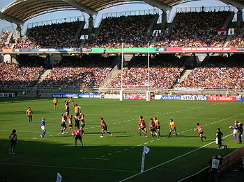
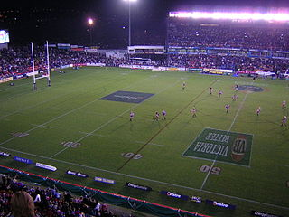

RUGBY a 13 |
|
Sebbene sia spesso ritenuto erroneamente uno sport brutale, il rugby deve le sue origini a una delle più aristocratiche scuole britanniche (quella di Rugby appunto, che gli ha dato il nome).Secondo la leggenda, nel 1823 il giovane studente William Webb Ellis, durante una partita a calcio giocata secondo uno dei tanti regolamenti allora in circolazione in Inghilterra, afferrò il pallone con le mani e, anziché calciarlo come previsto, cominciò a correre verso l'opposta linea di fondo. Gli sport allora non erano ancora dotati di regole codificate e molte varianti prevedevano che la palla potesse essere portata in mano (la principale differenza riguardava l'utilizzo delle mani - Handling game, contrapposto al Dribbling game), quindi di per sé la corsa di Webb Ellis non fu una vera e propria novità ma, anzi, una consuetudine ampiamente diffusa. La storia di Webb Ellis cominciò a circolare nel 1876, quattro anni dopo la sua morte, ad opera di Matthew Bloxam (un ex studente della Rugby School) che confessò al giornale della scuola di aver appreso, da fonte anonima, che fu proprio Ellis in quell'occasione a stabilire il passaggio da un football giocato con i piedi ad uno giocato con le mani. Anche se le indagini successive provarono che nella stessa scuola di Rugby si praticava più di uno sport in cui era permesso l'uso delle mani e che le regole del football variavano di anno in anno, William Webb Ellis è entrato nel mito, passando alla storia come l'ideatore del Rugby Football. Ancora oggi il trofeo della coppa del mondo di rugby è intestato a Webb Ellis e una targa alla Rugby School commemora il suo famoso quanto contestato gesto atletico. Comunque sia, tutti i testi di storia del rugby citano il celebre studente pur specificando i dubbi riguardo certe interpretazioni di quanto realmente avvenne. |
|  |
|  |